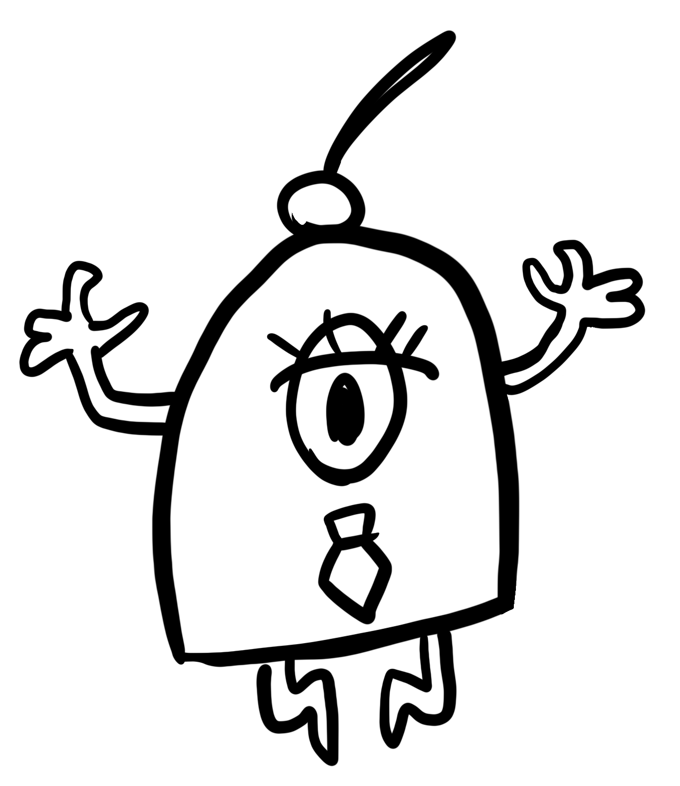
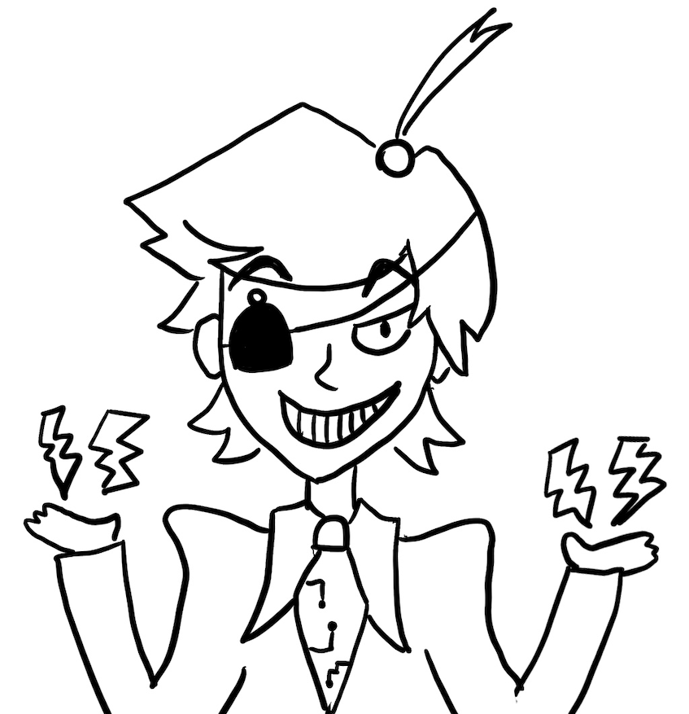

This shrine is dedicated to the very sexy NAND Cypher from fan-favorite
series Binary Calls.
About NAND Cypher
- Name
- NAND Cypher
- Age
- 10,000 years old
- First Appereance
- Binary Calls Ep. 6 – Infinite Loop
About Human!NAND Cypher
- Name
- NAND Cypher (human version)
- Creator
- Boba-tan
- Notes
- Original character do not steal
About Binary Calls
First aired in 2012, award-winning series Binary Calls follows the
adventures of lovely twins Flipper and Babel Bytes as they solve
tech-support mysteries in their uncle's computer repair shop.